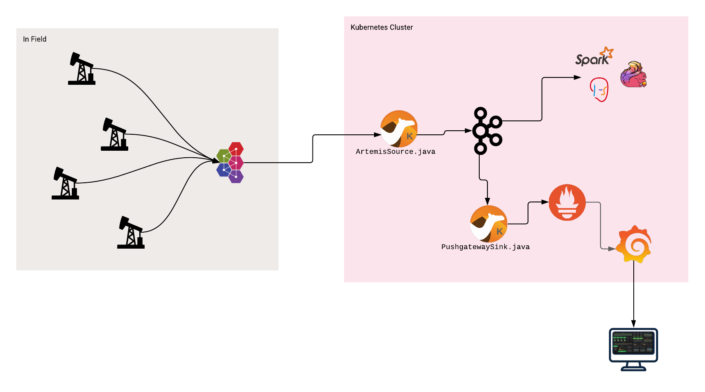
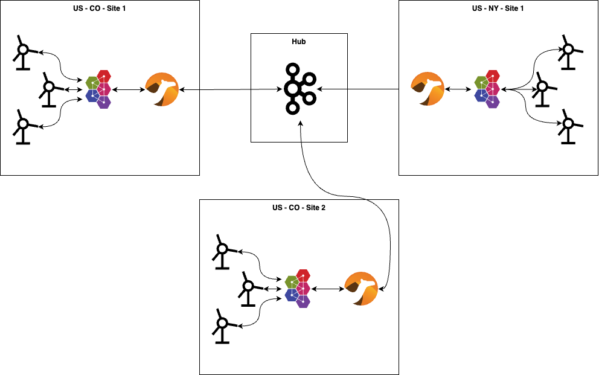
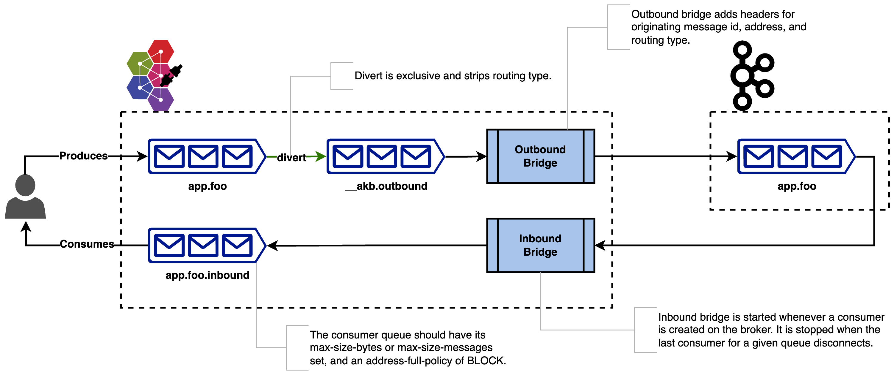

Bridging Apache Artemis - Part 2
In a previous post, I wrote about setting up a bridge between Apache Artemis and another JMS broker. Specifically in that case, I used IBM MQ. For part 2, I’d like to cover something a little more complex. Bridging between Apache Artemis and Apache Kafka.
To be clear, bridging from Artemis to Kafka doesn’t have to be difficult. As always, it depends on your use case. Let’s talk about the simplest one first.
Uni-directional
Let’s say you’re simply trying to bridge in one direction. For example, imagine you have a bunch of IoT devices spread around various sites. These types of devices typically don’t run a Kafka client. More commonly, they’ll speak one of the many standardized protocols like MQTT. If those devices are simply publishing telemetry data, then the communication is only flowing in one direction. In this case, you’d only need a couple of components. First, you’ll want to run an Artemis broker since it speaks MQTT. You could run the Artemis instance anywhere really, but most likely you’d want to run it on each site (close to the devices). This gives you several benefits, such as insulating your sites from network failures and simplifying security. Second, you’d need a simple Camel bridge application to consume the messages from each of the Artemis edge brokers, and produce them to the centralized Kafka cluster. And finally, you’ll obviously need a Kafka cluster. Take a look at the picture below for an example. Also, you can poke around the code if you want to see it running: https://github.com/joshdreagan/iot-demo

Bi-directional (simple)
Now let’s complicate things a bit and try to do bi-directional communication. In this case, let’s assume that maybe those IoT devices running out on the edge might want to receive command messages in addition to publishing their telemetry data. You’d of course need all the same components as before. The tricky part is routing the messages where they need to go. You might be tempted to simply use a hierarchical addressing strategy like you would normally do with MQTT. Something like “commands.US.CO.site-1234.device-5678” (would be “/commands/US/CO/site-1234/device-5678” in MQTT speak) to indicate the region and device you’d like to issue the command to. That way I can have independent Camel bridges (one for each Artemis/site) that consume from Kafka the topics that they’re interested in (potentially using wildcards), and produce to their local Artemis broker that’s colocated with the target device.
This strategy is not bad if you have a limited number of devices, but issues can arise when you maybe have millions of devices. While Kafka is great with raw throughput, it doesn’t really like having a ton of topics (and partitions). The move from Zookeeper to KRaft has improved this quite a bit, but you still need to try to keep the number of topics/partitions relatively low. So what do we do? Well, one solution might be to use that same hierarchical address structure, but move some of the information into a header. Using the previous example, maybe something like “commands.US.CO.site-1234” for the address, and put the “device-5678” in a message header. This would allow you to cut down the number of Kafka topics to be equal to the number of sites you have, as opposed to the total number of devices across all sites. And it would still allow the Camel bridge application to easily route messages to the correct broker and target device by concatenating the headers and source topic to rebuild the full address that it would produce to on its local Artemis broker.
This strategy has its limits though. If you were to move any more of the address into a header, the routing that the Camel bridge application has to do becomes much more complicated. Following the same example, let’s say I used “commands.US.CO” for the address, and put both “site-1234” and “device-5678” into headers. Now my site-local Camel bridge applications can no longer assume that all messages on the Kafka topic are of interest to them. And Kafka has no concept like JMS message selectors. So we either have the option of pulling messages we don’t care about and filtering locally, or we have to move to a more centralized push model. The obvious negative about local filtering is that it potentially greatly increases unnecessary network traffic. In my example, every bridge application in Colorado would pull all messages for every site in that state. Even for sites it’s not responsible for. Depending on the number of sites, and number of command messages, this could be a lot of wasted bandwidth. And the other option is not much better. If we moved the Camel bridge application up to the hub, and made it responsible for bridging to all sites in Colorado, we would eliminate the wasted bandwidth issue. However, our Camel application now has to be smart enough to know the addresses of all Artemis brokers at all sites in the state, and keep a routing map of which site (ie, “site-1234”) maps to which Artemis broker URL. So doable, but not ideal.

Bi-directional (complex)
Now, let’s cover a really complex case. What if we have bi-directional communication, but it’s not data that can be broken up by address? What if, instead, I want to have competing consumers, and am using Artemis as more of a proxy to Kafka just so my clients can speak AMQP (or whatever protocol), or be coded to the JMS API?
Well, much like the previous cases, producing is not a problem. As messages come in to Artemis, I can simply use a bridge to pick them up and push them to a Kafka cluster. I can even be slick about it and use a feature called “diverts” to redirect all messages that I want to forward onto a single “outbound” queue. That way my bridge only has to consume from that one queue. All information about the original address a message was produced to is stored in headers. So bridging to the appropriate Kafka topic is easy.
But what about consuming? That’s actually the difficult part. Let’s assume that I have more than one Artemis broker. Let’s also assume that my consumers are spread across those brokers. If I just used a simple Kafka->Artemis Camel bridge, it would pull down all messages (as fast as it could) and produce them to whatever Artemis broker it was connected to. That Artemis broker might not actually have a consumer attached to it. The consumer might be attached to one of the other Artemis brokers. So now I’d need to store-and-forward them around an Artemis cluster. That’s extra hops to persistence, and more wasted bandwidth.
What if, instead, I only pulled messages across when a consumer was actually attached and listening on a given queue/topic? That way I could avoid unnecessary hops, and potentially (depending on my use case) avoid clustering the Artemis brokers altogether. In addition, it would reduce the amount of storage I would need on my Artemis brokers as I could now control how many messages I pull across at a time.
Unfortunately, in order to have hooks into Artemis-internal things like consumers attaching/listening, I won’t be able to use a simple external Camel application. For that type of insight, I’d need to implement my bridge as a broker plugin that runs inside the Artemis broker itself. Using this strategy, we can handle both queues and topics. With a few caveats…
First, for queues, you’d need all the bridge instances to use the same Kafka consumer group ID. Which limits the number of bridges you can have to be equal to the number of partitions the underlying Kafka topic has. This most likely wouldn’t be too big of a problem since each Artemis instance can handle thousands of clients. And if I have thousands of partitions, I can have thousands of Artemis brokers/bridges/proxies, with each one handling thousands of clients. So probably good enough. For topics, I would want to configure each bridge instance to have a unique Kafka consumer group ID. So in that case, I wouldn’t be limited by the number of partitions, but rather by the fact that each of my bridge consumers would effectively be single threaded. Which may or may not be a performance bottleneck.
The second issue is that Kafka consumers pull messages in batches for performance reasons. So you could potentially run into a case where a consumer attaches to an Artemis broker, then a bridge is fired up and starts pulling messages, but the consumer goes away before it consumes the full batch. In that case, you’d either have messages that were stuck on a specific Artemis broker waiting for a consumer to come back, or you’d fail the batch and potentially get duplicates when the consumer reattaches and the batch is pulled again. Which of those you get depends on your “ack” strategy for the KafkaConsumer. You could, of course, mitigate this by lowering your batch size on your KafkaConsumer. But doing so would impact your performance. In my opinion, it would be better to make your consumer apps tolerant of duplicates (since duplicates are inevitable in literally any system anyway).
I did implement an example of this strategy, which can be found here: https://github.com/joshdreagan/artemis-kafka-bridge/. However, it could certainly use some improvement. For example, right now I have the producer and consumer queues separated so that I could use Artemis’s built-in queue-depth blocking to limit the number of messages I pull at a time. This could be replaced with some custom blocking code, which (when combined with selective diverts) would allow it to then use the same queue name for both producer and consumer. Which would make it completely transparent to clients. Also, right now the queues/topics/diverts have to be manually created. With a little more coding, the diverts could be automatically created and applied by matching a wildcard on the address. Which would greatly simplify the configuration necessary to use it. But all of that is for another day when I maybe get some more free time… Which is code for “probably never”. 😂

Summary
So which option is right for you? Easy… the simplest one that meets your requirements. Whatever they may be.
Bridging Apache Artemis - Part 2
https://blog.joshdreagan.com/2025/06/19/bridging_apache_artemis_part_2/